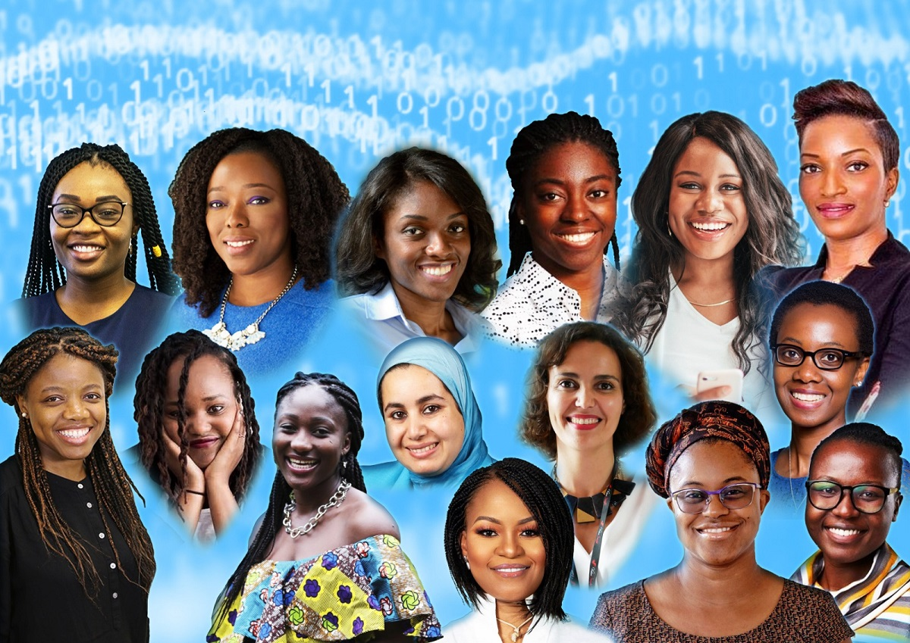
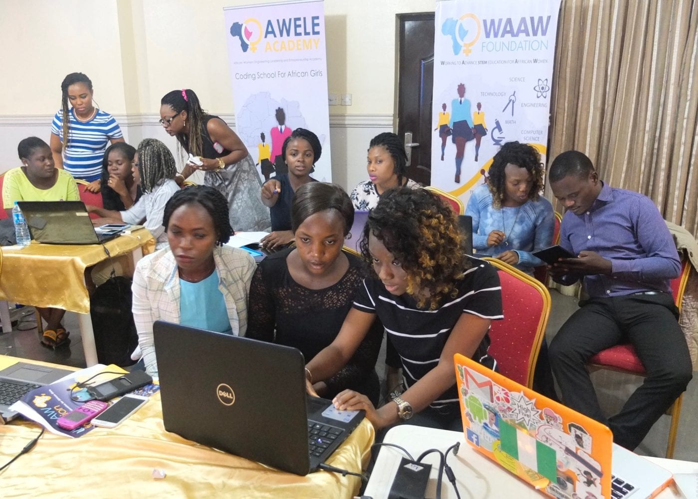
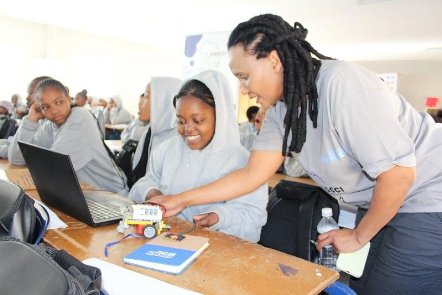
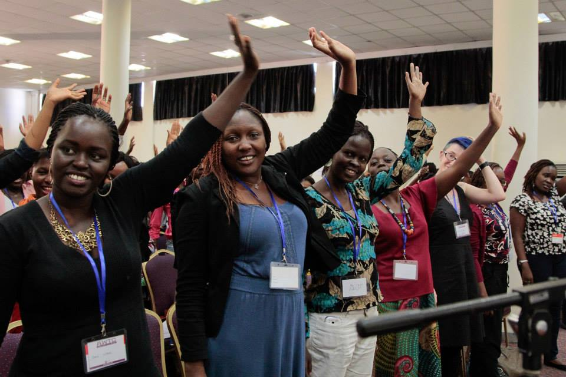

Women in AI Cameroon démocratise l'intelligence artificielle pour chaque femme camerounaise, quel que soit son âge, son métier ou son niveau d'éducation.

Un Cameroun où chaque femme comprend et utilise l'IA pour entreprendre, apprendre et décider.
Promouvoir une IA inclusive, éthique et participative au service du développement durable et du leadership féminin.
Des femmes qui forment et inspirent d'autres femmes, à la croisée du numérique, de l'éducation et de l'entrepreneuriat.
Réduire la fracture numérique de genre et faire du Cameroun un modèle d'inclusion numérique en Afrique.
Pour concrétiser sa vision, WAI-CAM déploie des programmes adaptés à chaque profil de femme.
Sensibiliser les jeunes à l'IA et encourager la création d'emplois dans le numérique.
Accompagner les femmes du secteur public à utiliser l'IA pour améliorer leurs performances.
Former des ambassadrices régionales au leadership numérique et à la vulgarisation de l'IA.
Développer des micro-projets locaux où l'IA répond à des besoins concrets des communautés.
"Toutes les grandes révolutions technologiques nous sont passées sous le nez. Pas question, cette fois, que les Africains ratent le train !"
Visionnaire dans le domaine de l'innovation et de l'inclusion financière, Nelly s'était illustrée par son engagement à démocratiser l'accès aux technologies et aux services numériques pour les populations africaines. Son implication et sa vision continueront d'inspirer nos actions en faveur d'une intelligence artificielle inclusive et humaine.
Des formations, des événements et des initiatives concrètes sur le terrain.

Comprendre l'IA sans jargon technique, découvrir des outils accessibles et identifier des usages concrets pour le quotidien professionnel.
Lire la suite →
Sous le patronage du Sous-Préfet de Dargala, WAI-CAM forme la jeunesse de l'Extrême-Nord à l'intelligence artificielle.
Lire la suite →
Dans le cadre de la Fête de la Jeunesse 2026, WAI-CAM organise des formations IA en phase avec les enjeux d'innovation et d'emploi.
Lire la suite →WAI-CAM invite les institutions, entreprises, organisations de la société civile et médias à contribuer à une IA inclusive et accessible pour toutes les femmes camerounaises.